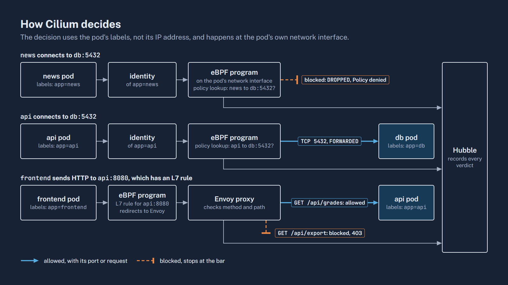

Chapter 11. Read the evidence in Hubble
In chapter 10 you watched the attack fail. This chapter shows you why it failed, in Cilium's own records. You'll read the lines where the news pod tried to reach db and admin and got Policy denied, then the lines where api reached the same database port a few seconds later and got through. You'll also see Envoy refuse /api/export with a 403 and find the attacker's name lookups, which Hubble logged even though every connection after them failed. Each important output goes into a text file in ~/microseg/evidence, ready for your report. Plan about 1.5 hours.
Chapter 10 ended with both policy files applied, and this whole chapter assumes they still are. The first step checks that for you.
First, check that Hubble answers
The hubble command doesn't read the cluster by itself. It asks Hubble Relay, the Cilium part that collects flows from every node, and it reaches Relay through the port-forward you started in chapter 4 with cilium hubble port-forward &. That port-forward stops when you close its terminal or restart Windows, and an empty screen caused by a dead port-forward looks a lot like "no traffic". Check the connection first.
cd ~/microseg
mkdir -p evidence
hubble status
kubectl -n campus get cnpmkdir -p evidence creates the folder where this chapter saves its outputs. The -p means "no error if it already exists". hubble status asks Relay how it's doing and how many nodes it collects flows from. kubectl -n campus get cnp lists the policies in the campus namespace. cnp is the short name Kubernetes accepts for CiliumNetworkPolicy, so you don't have to type the long one.
You should see the Hubble status lines first, then a table of policies.
In the Hubble part, the line that has to match is Connected Nodes: 3/3, which means Relay hears from all three nodes. The policy table must list 10 names, from admin to ops, and every row must say True under VALID. The AGE column shows how long ago each policy was created, so yours will differ.
If you see this instead
4245: connect: connection refusedThe full message is longer, but it contains this text. Port 4245 is where the port-forward listens, and "connection refused" means nothing is listening there, so the port-forward isn't running. Start it again in the background with cilium hubble port-forward &, wait five seconds and run hubble status again. The & at the end hands the command to the background so your prompt comes back.
No resources found in campus namespace.Your policies aren't applied. Maybe you ran deploy.sh again, which deletes the namespace and every policy in it. Apply both files with kubectl apply -f k8s/policies/, wait ten seconds and repeat the step.
If Connected Nodes shows 2/3 or less, one Cilium agent isn't ready yet, which happens for a minute or two after Windows starts. Run cilium status --wait and let it finish, then run hubble status again.
New traffic: the attack and the portal checks
Hubble doesn't keep flows forever. Each node holds the most recent ones in a ring buffer, a store of fixed size where every new flow pushes out the oldest one. The attack you ran in chapter 10 may already have been pushed out. Run it again now, together with the portal checks, so that the next steps have both blocked and allowed traffic to show.
The attack goes through your dashboard, so the dashboard has to be running. If it isn't, open a second Ubuntu terminal, start it with cd ~/microseg/dashboard && ../.venv/bin/python app.py, leave that window open and come back to the first terminal.
curl -s -X POST localhost:5050/api/attack | jq -r '.[] | (if .success then "SUCCESS " else "FAILED " end) + .step'
bash check-portal.shThe first line asks the dashboard's /api/attack route to send the five attack payloads through the NodePort at localhost:30080, the same door the PowerShell commands used in chapter 8. -X POST is needed because that route only accepts POST requests. The dashboard answers with a list of five results, and jq turns it into readable lines. -r prints plain text without quotes, and .[] takes the results one at a time. if .success then "SUCCESS " else "FAILED " end picks a word for each one, and + .step adds the step's name after it. The command takes about 18 seconds, because the four blocked steps each wait for their own timeout. The second line runs the six checks a real student and the ops team would make.
You should see five attack lines and then the portal checks.
Step 1 says SUCCESS and steps 2 to 5 say FAILED, which is the 1 of 5 from chapter 10. The last line must read PORTAL: 6/6 OK.
If you see this instead
The first command prints nothing at all and the prompt returns at once. The -s flag hides curl's error messages, so a dashboard that isn't running shows up as silence. Start the dashboard as described above and run the command again.
All five lines say SUCCESS. The policies are missing, and the first step of this chapter should have caught that. Apply them with kubectl apply -f k8s/policies/, wait ten seconds and repeat.
One or more portal checks say FAIL. A legitimate flow is being blocked, and Hubble can name it. Run hubble observe --namespace campus --verdict DROPPED --last 20 and look for a source and destination that appear in your flow table from chapter 9. Chapter 13 walks through this kind of search question by question.
Drops from the news pod, wide then narrow
The first command shows every recent drop in the namespace, and the second keeps only the ones from the news pod, where the attacker sits.
hubble observe --namespace campus --verdict DROPPED --last 8Each word after hubble observe is a filter, a condition a flow has to meet to be printed. --namespace campus keeps flows where either end is a pod in campus. --verdict DROPPED keeps only blocked traffic. --last 8 asks for the 8 newest matching flows. Relay asks each node for its own 8 and then merges them, so with campus pods on two worker nodes you can get up to 16 lines.
You should see up to 16 lines. Most of them come in pairs, where one line of each pair holds EGRESS DENIED and the other Policy denied DROPPED, and every line ends with the TCP flags or the HTTP request in brackets.
The 8 lines from the node where news runs come from news, because the attack was the last thing that ran there. The other 8 come from the second worker node, where db, api, auth, admin and ops run. You may also see drops from other pods such as auth. Those come from the dashboard's reachability matrix, which tests blocked paths on purpose, and every blocked cell in the matrix leaves a drop behind. A single line from campus/frontend- to campus/api- with http-request DROPPED and /api/export is a forbidden export request, such as the one you sent in chapter 10. Envoy refused it, and the step "Read the L7 decision" later in this chapter shows how. Your timestamps, pod name endings and port numbers will differ from the ones printed here.
To keep only the drops from the news pod, run the second command.
hubble observe --from-pod campus/news --verdict DROPPED --last 12 | tee ~/microseg/evidence/ch13-drops-from-news.txt--from-pod campus/news keeps flows whose source is a pod in the campus namespace whose name starts with news. You give the start of the name because the end is random and changes whenever the pod is replaced. The namespace is already inside that value, so this filter can't be combined with --namespace. The | is a pipe. It sends the output of hubble observe into tee, a small program that prints what it receives on the screen and writes the same text into the file you name. You see the output, and a copy lands in evidence/ for chapter 14.
This time every line starts with the timestamp and then campus/news-.
Nov 19 20:43:39.887: campus/news-545758c8c6-2jp4n:55292 (ID:53922) <> campus/db-887596757-wzmtj:5432 (ID:13907) policy-verdict:none EGRESS DENIED (TCP Flags: SYN)
Nov 19 20:43:39.887: campus/news-545758c8c6-2jp4n:55292 (ID:53922) <> campus/db-887596757-wzmtj:5432 (ID:13907) Policy denied DROPPED (TCP Flags: SYN)
Nov 19 20:43:40.911: campus/news-545758c8c6-2jp4n:55292 (ID:53922) <> campus/db-887596757-wzmtj:5432 (ID:13907) policy-verdict:none EGRESS DENIED (TCP Flags: SYN)
Nov 19 20:43:40.911: campus/news-545758c8c6-2jp4n:55292 (ID:53922) <> campus/db-887596757-wzmtj:5432 (ID:13907) Policy denied DROPPED (TCP Flags: SYN)
Nov 19 20:43:41.917: campus/news-545758c8c6-2jp4n:60310 (ID:53922) <> campus/admin-766cddb668-gr2k8:5002 (ID:5410) policy-verdict:none EGRESS DENIED (TCP Flags: SYN)
Nov 19 20:43:41.917: campus/news-545758c8c6-2jp4n:60310 (ID:53922) <> campus/admin-766cddb668-gr2k8:5002 (ID:5410) Policy denied DROPPED (TCP Flags: SYN)
Nov 19 20:43:42.923: campus/news-545758c8c6-2jp4n:60310 (ID:53922) <> campus/admin-766cddb668-gr2k8:5002 (ID:5410) policy-verdict:none EGRESS DENIED (TCP Flags: SYN)
Nov 19 20:43:42.923: campus/news-545758c8c6-2jp4n:60310 (ID:53922) <> campus/admin-766cddb668-gr2k8:5002 (ID:5410) Policy denied DROPPED (TCP Flags: SYN)
Nov 19 20:43:43.947: campus/news-545758c8c6-2jp4n:60310 (ID:53922) <> campus/admin-766cddb668-gr2k8:5002 (ID:5410) policy-verdict:none EGRESS DENIED (TCP Flags: SYN)
Nov 19 20:43:43.947: campus/news-545758c8c6-2jp4n:60310 (ID:53922) <> campus/admin-766cddb668-gr2k8:5002 (ID:5410) Policy denied DROPPED (TCP Flags: SYN)
Nov 19 20:43:44.971: campus/news-545758c8c6-2jp4n:60310 (ID:53922) <> campus/admin-766cddb668-gr2k8:5002 (ID:5410) policy-verdict:none EGRESS DENIED (TCP Flags: SYN)
Nov 19 20:43:44.971: campus/news-545758c8c6-2jp4n:60310 (ID:53922) <> campus/admin-766cddb668-gr2k8:5002 (ID:5410) Policy denied DROPPED (TCP Flags: SYN)The lines come in pairs. In each pair the first line holds policy-verdict:none EGRESS DENIED and the second holds Policy denied DROPPED, with the same source, destination and port in both. The destinations are db on port 5432 and admin on port 5002. The db lines come from attack step 4, where psql tried to log in to the database. Step 3 left the same kind of lines a few seconds earlier, and they fall outside the last 12. The admin lines come from step 5, where curl tried to open the admin panel. The scan in step 2 also left drops toward frontend on port 80, api on 8080 and auth on 5001, but they're older, so they may fall outside the last 12.
The same pair repeats about one second apart with the same source port. That's the Linux kernel retrying the connection for the news pod, because its first attempt got no answer. Cilium drops the packet without replying, so the sender can't tell a blocked port from a slow one and keeps retrying until its timeout runs out. That's also why each blocked attack step in chapter 10 took a few seconds to fail.
If you see this instead
filters --from-pod and --namespace cannot be combinedYou added --namespace campus to the second command. Remove it. The campus/ at the start of campus/news already names the namespace.
The second command prints nothing. The attack flows have already been pushed out of the ring buffer, usually because more time passed than you think. Run the attack line from the previous step again and repeat this command within a minute or two.
The lines end in FORWARDED instead of DROPPED, or you see no drops at all while the attack says 5 of 5. The policies aren't in place. Go back to the first step of this chapter.
One Hubble line, field by field
Here is one line from the test run, copied from the output above.
Nov 19 20:43:39.887: campus/news-545758c8c6-2jp4n:55292 (ID:53922) <> campus/db-887596757-wzmtj:5432 (ID:13907) Policy denied DROPPED (TCP Flags: SYN)Read it from left to right.
| Part of the line | What it means |
|---|---|
Nov 19 20:43:39.887: |
When Cilium saw the packet, down to the millisecond. |
campus/news-545758c8c6-2jp4n |
The source, written as namespace, a slash and the pod name. The two random parts at the end belong to this one pod. |
:55292 |
The source port. When a program opens a connection, the kernel picks a free temporary port on the sender's side for that one connection, so this number changes from one connection to the next. |
(ID:53922) |
The source's identity number. Cilium gives one number to every distinct set of pod labels, here app=news in namespace campus, and every policy decision is made against this number, never against the IP address. Cilium picks the numbers itself, so yours are different, but a pod keeps its number when it restarts, because its labels stay the same. |
<> |
Hubble couldn't set a direction, which happens to packets dropped before any connection exists. Traffic that gets through shows -> for a request and <- for a reply. |
campus/db-887596757-wzmtj:5432 |
The destination pod and the port the packet was going to, here PostgreSQL's port. |
(ID:13907) |
The destination's identity number, the one that belongs to app=db. |
Policy denied |
The drop reason. It says a policy decision stopped the packet. A crashed pod or a missing route would carry a different reason. |
DROPPED |
The verdict. The packet was thrown away and nothing was sent back. |
(TCP Flags: SYN) |
The kind of TCP packet. A SYN is the first packet of a new TCP connection, the knock that asks "may I connect". This connection never got past the knock. |
The other line of each pair, policy-verdict:none EGRESS DENIED, records the decision rather than the dropped packet. policy-verdict marks it as a decision line. none means no allow rule matched, so default deny decided. EGRESS says the check happened as the packet left news, and the news policy has no egress section at all. DENIED is the decision.
The same flow can be printed as JSON, a structured text format where every value has a name. That shows fields the one-line format leaves out, among them the labels behind the identity number.
hubble observe --from-pod campus/news --verdict DROPPED --last 1 -o json | jq '{time: .flow.time, verdict: .flow.verdict, drop_reason: .flow.drop_reason_desc, source: .flow.source.pod_name, source_labels: .flow.source.labels, destination: .flow.destination.pod_name, port: .flow.l4.TCP.destination_port}'--last 1 takes only the newest drop. -o json prints it as JSON instead of one line. The jq filter between the single quotes builds a smaller object. Each name: .flow.something pair copies one field out of the flow and gives it a short name, so you don't have to scroll through every field Hubble prints.
You should see one JSON object with seven fields.
{
"time": "2026-11-19T20:43:44.971447182Z",
"verdict": "DROPPED",
"drop_reason": "POLICY_DENIED",
"source": "news-545758c8c6-2jp4n",
"source_labels": [
"k8s:app=news",
"k8s:io.cilium.k8s.namespace.labels.kubernetes.io/metadata.name=campus",
"k8s:io.cilium.k8s.policy.cluster=kind-kind",
"k8s:io.cilium.k8s.policy.serviceaccount=default",
"k8s:io.kubernetes.pod.namespace=campus"
],
"destination": "admin-766cddb668-gr2k8",
"port": 5002
}"drop_reason": "POLICY_DENIED" is the same drop reason in the form a program would read. The source_labels list holds k8s:app=news, the exact label your news policy selects with app: news. That's the link between the drop and your YAML file. The other labels are added by Cilium itself, such as the namespace and the cluster name kind-kind.
If you see this instead
Command 'jq' not found, but can be installed with:jq was installed in chapter 3. Install it with sudo apt install -y jq and run the command again.
A field prints null. The name after .flow. has a typo, for example drop_reason_dsc. Copy the command again from the guide instead of retyping it.
Same port, two identities
Within a few seconds of each other, in the same run, news and api both try to reach the same db pod on the same port 5432. News is dropped and api is let through. Nothing about the destination differs, so the only thing that can explain the two verdicts is the identity of the sender.
hubble observe --to-pod campus/db --last 12 | tee ~/microseg/evidence/ch13-to-db.txt--to-pod campus/db keeps flows whose destination is the db pod. There's no --verdict filter this time, so allowed and blocked traffic appear together. Since db runs on one node and news on another, each node contributes its own 12 lines and you can get up to 24.
You should see news lines with DROPPED first, then api and admin lines with FORWARDED.
Nov 19 20:43:35.786: campus/news-545758c8c6-2jp4n:55282 (ID:53922) <> campus/db-887596757-wzmtj:5432 (ID:13907) policy-verdict:none EGRESS DENIED (TCP Flags: SYN)
Nov 19 20:43:35.786: campus/news-545758c8c6-2jp4n:55282 (ID:53922) <> campus/db-887596757-wzmtj:5432 (ID:13907) Policy denied DROPPED (TCP Flags: SYN)
Nov 19 20:43:36.815: campus/news-545758c8c6-2jp4n:55282 (ID:53922) <> campus/db-887596757-wzmtj:5432 (ID:13907) policy-verdict:none EGRESS DENIED (TCP Flags: SYN)
Nov 19 20:43:36.815: campus/news-545758c8c6-2jp4n:55282 (ID:53922) <> campus/db-887596757-wzmtj:5432 (ID:13907) Policy denied DROPPED (TCP Flags: SYN)
Nov 19 20:43:37.835: campus/news-545758c8c6-2jp4n:55282 (ID:53922) <> campus/db-887596757-wzmtj:5432 (ID:13907) policy-verdict:none EGRESS DENIED (TCP Flags: SYN)
Nov 19 20:43:37.835: campus/news-545758c8c6-2jp4n:55282 (ID:53922) <> campus/db-887596757-wzmtj:5432 (ID:13907) Policy denied DROPPED (TCP Flags: SYN)
Nov 19 20:43:38.870: campus/news-545758c8c6-2jp4n:55292 (ID:53922) <> campus/db-887596757-wzmtj:5432 (ID:13907) policy-verdict:none EGRESS DENIED (TCP Flags: SYN)
Nov 19 20:43:38.870: campus/news-545758c8c6-2jp4n:55292 (ID:53922) <> campus/db-887596757-wzmtj:5432 (ID:13907) Policy denied DROPPED (TCP Flags: SYN)
Nov 19 20:43:39.887: campus/news-545758c8c6-2jp4n:55292 (ID:53922) <> campus/db-887596757-wzmtj:5432 (ID:13907) policy-verdict:none EGRESS DENIED (TCP Flags: SYN)
Nov 19 20:43:39.887: campus/news-545758c8c6-2jp4n:55292 (ID:53922) <> campus/db-887596757-wzmtj:5432 (ID:13907) Policy denied DROPPED (TCP Flags: SYN)
Nov 19 20:43:40.911: campus/news-545758c8c6-2jp4n:55292 (ID:53922) <> campus/db-887596757-wzmtj:5432 (ID:13907) policy-verdict:none EGRESS DENIED (TCP Flags: SYN)
Nov 19 20:43:40.911: campus/news-545758c8c6-2jp4n:55292 (ID:53922) <> campus/db-887596757-wzmtj:5432 (ID:13907) Policy denied DROPPED (TCP Flags: SYN)
Nov 19 20:43:45.283: campus/api-65c5c7d5fd-2qtsk:55286 (ID:6935) -> campus/db-887596757-wzmtj:5432 (ID:13907) to-endpoint FORWARDED (TCP Flags: SYN)
Nov 19 20:43:45.283: campus/api-65c5c7d5fd-2qtsk:55286 (ID:6935) -> campus/db-887596757-wzmtj:5432 (ID:13907) to-endpoint FORWARDED (TCP Flags: ACK)
Nov 19 20:43:45.283: campus/api-65c5c7d5fd-2qtsk:55286 (ID:6935) -> campus/db-887596757-wzmtj:5432 (ID:13907) to-endpoint FORWARDED (TCP Flags: ACK, PSH)
Nov 19 20:43:45.295: campus/api-65c5c7d5fd-2qtsk:55286 (ID:6935) -> campus/db-887596757-wzmtj:5432 (ID:13907) to-endpoint FORWARDED (TCP Flags: ACK, FIN)
Nov 19 20:43:45.298: campus/api-65c5c7d5fd-2qtsk:55286 (ID:6935) -> campus/db-887596757-wzmtj:5432 (ID:13907) to-endpoint FORWARDED (TCP Flags: ACK)
Nov 19 20:43:45.620: campus/admin-766cddb668-gr2k8:42818 (ID:5410) -> campus/db-887596757-wzmtj:5432 (ID:13907) policy-verdict:L3-L4 EGRESS ALLOWED (TCP Flags: SYN)
Nov 19 20:43:45.620: campus/admin-766cddb668-gr2k8:42818 (ID:5410) -> campus/db-887596757-wzmtj:5432 (ID:13907) policy-verdict:L3-L4 INGRESS ALLOWED (TCP Flags: SYN)
Nov 19 20:43:45.620: campus/admin-766cddb668-gr2k8:42818 (ID:5410) -> campus/db-887596757-wzmtj:5432 (ID:13907) to-endpoint FORWARDED (TCP Flags: SYN)
Nov 19 20:43:45.620: campus/admin-766cddb668-gr2k8:42818 (ID:5410) -> campus/db-887596757-wzmtj:5432 (ID:13907) to-endpoint FORWARDED (TCP Flags: ACK)
Nov 19 20:43:45.620: campus/admin-766cddb668-gr2k8:42818 (ID:5410) -> campus/db-887596757-wzmtj:5432 (ID:13907) to-endpoint FORWARDED (TCP Flags: ACK, PSH)
Nov 19 20:43:45.632: campus/admin-766cddb668-gr2k8:42818 (ID:5410) -> campus/db-887596757-wzmtj:5432 (ID:13907) to-endpoint FORWARDED (TCP Flags: ACK, FIN)
Nov 19 20:43:45.637: campus/admin-766cddb668-gr2k8:42818 (ID:5410) -> campus/db-887596757-wzmtj:5432 (ID:13907) to-endpoint FORWARDED (TCP Flags: ACK)Find a line whose source, right after the timestamp, is campus/api- and that holds -> campus/db- and to-endpoint FORWARDED. The arrow -> says it's a request, to-endpoint says the packet was handed to the destination pod, and FORWARDED is the verdict. Compare its identity numbers with the news lines above it. The destination ID is the same 13907 in both, while the source ID differs, 53922 for news and 6935 for api. Your numbers are different, but the pattern has to match, with one destination ID on every line and a different source ID behind each of the two verdicts.
The api connection doesn't stop at the SYN. Its later lines show ACK, ACK, PSH and ACK, FIN, the rest of a normal TCP conversation. ACK confirms receipt, PSH marks packets carrying data (the PostgreSQL login and the query), and FIN closes the connection. Hubble prints a line only when the flags change, not for every packet. The admin lines also show their decision lines, policy-verdict:L3-L4 EGRESS ALLOWED and policy-verdict:L3-L4 INGRESS ALLOWED. L3-L4 means an address-and-port rule matched, once on the way out of admin and once on the way into db. The admin traffic is there because the last portal check asks ops to open the admin panel, and admin reads the student list from db.


Figure 6 shows how Cilium makes this decision. Notice that the check happens at the pod's own network interface and is made against the identity number, so two senders hitting the same port can get two different answers.
If you see this instead
Every line says DROPPED and none says FORWARDED. No legitimate traffic reached db recently. Run bash check-portal.sh and repeat the command.
The command prints nothing. Check that you typed campus/db and not db. Without a namespace in the value, Hubble looks in the namespace called default, where nothing of yours runs.
Lines from api to db end in DROPPED. Then a legitimate flow is blocked, and the portal checks would also fail. Compare the api policy's egress rule for app: db and the db policy's ingress list in k8s/policies/2-allow.yaml with the file in chapter 10, character by character.
Read the L7 decision
The rule on api works at L7, the HTTP level. The connection from frontend to api on port 8080 is allowed, and then Envoy reads every request inside it and passes only the three listed calls. Start with the allowed requests, the ones your portal checks sent a few minutes ago.
hubble observe --namespace campus --protocol http --last 6--protocol http keeps only HTTP flows. Hubble can show these only because the api policy has an http rule, which sends that traffic through Envoy where it can be read. Traffic covered only by address-and-port rules never shows HTTP details.
You should see pairs of lines, a request and its response, for the portal's login, profile and grades calls.
Nov 19 20:44:36.885: campus/frontend-6d755c977c-rzsg7:58092 (ID:65149) -> campus/api-65c5c7d5fd-2qtsk:8080 (ID:6935) http-request FORWARDED (HTTP/1.1 POST http://api.campus.svc.cluster.local:8080/api/login)
Nov 19 20:44:36.920: campus/frontend-6d755c977c-rzsg7:58092 (ID:65149) <- campus/api-65c5c7d5fd-2qtsk:8080 (ID:6935) http-response FORWARDED (HTTP/1.1 200 35ms (POST http://api.campus.svc.cluster.local:8080/api/login))
Nov 19 20:44:36.934: campus/frontend-6d755c977c-rzsg7:58106 (ID:65149) -> campus/api-65c5c7d5fd-2qtsk:8080 (ID:6935) http-request FORWARDED (HTTP/1.1 GET http://api.campus.svc.cluster.local:8080/api/profile)
Nov 19 20:44:36.972: campus/frontend-6d755c977c-rzsg7:58106 (ID:65149) <- campus/api-65c5c7d5fd-2qtsk:8080 (ID:6935) http-response FORWARDED (HTTP/1.1 200 38ms (GET http://api.campus.svc.cluster.local:8080/api/profile))
Nov 19 20:44:36.984: campus/frontend-6d755c977c-rzsg7:58112 (ID:65149) -> campus/api-65c5c7d5fd-2qtsk:8080 (ID:6935) http-request FORWARDED (HTTP/1.1 GET http://api.campus.svc.cluster.local:8080/api/grades)
Nov 19 20:44:37.015: campus/frontend-6d755c977c-rzsg7:58112 (ID:65149) <- campus/api-65c5c7d5fd-2qtsk:8080 (ID:6935) http-response FORWARDED (HTTP/1.1 200 30ms (GET http://api.campus.svc.cluster.local:8080/api/grades))Each request line shows http-request FORWARDED with the method and the full address, for example POST http://api.campus.svc.cluster.local:8080/api/login. Each response line shows http-response FORWARDED with status 200 and the time api took, around 30 to 40 ms on the test laptop.
Then send a request the L7 rule forbids.
curl -s -i localhost:30080/api/export-i makes curl print the response headers before the body, so you can see the status line.
The first line has to read HTTP/1.1 403 Forbidden and the last line Access denied.
HTTP/1.1 403 Forbidden
Server: nginx/1.28.3
Date: Thu, 19 Nov 2026 20:43:13 GMT
Content-Type: text/plain
Content-Length: 15
Connection: keep-alive
Access deniedHubble recorded that refusal too.
hubble observe --namespace campus --protocol http --last 2 | tee ~/microseg/evidence/ch13-l7-export.txtThe two newest HTTP flows are the request you sent and its answer.
The request line reads http-request DROPPED (HTTP/1.1 GET http://api.campus.svc.cluster.local:8080/api/export). The response line reads http-response FORWARDED (HTTP/1.1 403 0ms followed by the same address. Envoy dropped the request and wrote the 403 answer itself, which is why it took 0 ms. The api program never saw the request at all. The 403 reply is marked FORWARDED because it was delivered back to frontend. Compare this with the blocked database connections earlier. A blocked L3/L4 connection gets no answer and times out after seconds, while a blocked L7 request gets an immediate, polite refusal. Another filter for the same evidence is --http-status 403, which shows only responses with that status.
If you see this instead
The lines show dns-request and dns-response instead of HTTP. You typed --type l7, which also matches DNS, because Cilium's DNS handling counts as L7 too. Use --protocol http as shown.
--protocol http prints nothing at all. The api policy is missing its http rule, so no HTTP traffic passes through Envoy. Run kubectl -n campus get cnp api -o yaml and look for the three method: lines. If they're missing, compare the api policy in k8s/policies/2-allow.yaml with chapter 10 and apply the file again.
The export request answers HTTP/1.1 200 OK with a list of grades. The L7 rule isn't active. Check the policy count from the first step of this chapter and the api policy as described in the paragraph above.
Read the attacker's DNS lookups
Before a program can connect to admin, it has to turn that name into an address. That's DNS, and your allow-dns policy allows every pod to ask kube-dns. The policy also has a dns block, which sends each lookup through Cilium's DNS proxy, and that proxy logs the name. So even a fully blocked attacker leaves a trail of every name it looked up.
hubble observe --from-pod campus/news --protocol dns --last 10 | tee ~/microseg/evidence/ch13-dns-news.txt--protocol dns keeps only DNS flows. With --from-pod campus/news you see the questions news asked. The answers travel the other way, from kube-dns to news, and this filter leaves them out.
You should see ten dns-request proxy FORWARDED lines from news to a kube-system/coredns- pod on port 53. The pods behind the kube-dns Service are named coredns after the program they run.
Nov 19 20:43:41.889: campus/news-545758c8c6-2jp4n:46023 (ID:53922) -> kube-system/coredns-589f44dc88-6blh4:53 (ID:61175) dns-request proxy FORWARDED (DNS Query x.campus.svc.cluster.local. AAAA)
Nov 19 20:43:41.889: campus/news-545758c8c6-2jp4n:46023 (ID:53922) -> kube-system/coredns-589f44dc88-6blh4:53 (ID:61175) dns-request proxy FORWARDED (DNS Query x.campus.svc.cluster.local. A)
Nov 19 20:43:41.890: campus/news-545758c8c6-2jp4n:33347 (ID:53922) -> kube-system/coredns-589f44dc88-6blh4:53 (ID:61175) dns-request proxy FORWARDED (DNS Query x.svc.cluster.local. AAAA)
Nov 19 20:43:41.890: campus/news-545758c8c6-2jp4n:33347 (ID:53922) -> kube-system/coredns-589f44dc88-6blh4:53 (ID:61175) dns-request proxy FORWARDED (DNS Query x.svc.cluster.local. A)
Nov 19 20:43:41.892: campus/news-545758c8c6-2jp4n:53423 (ID:53922) -> kube-system/coredns-589f44dc88-6blh4:53 (ID:61175) dns-request proxy FORWARDED (DNS Query x.cluster.local. AAAA)
Nov 19 20:43:41.892: campus/news-545758c8c6-2jp4n:53423 (ID:53922) -> kube-system/coredns-589f44dc88-6blh4:53 (ID:61175) dns-request proxy FORWARDED (DNS Query x.cluster.local. A)
Nov 19 20:43:41.893: campus/news-545758c8c6-2jp4n:42047 (ID:53922) -> kube-system/coredns-589f44dc88-6blh4:53 (ID:61175) dns-request proxy FORWARDED (DNS Query x. A)
Nov 19 20:43:41.893: campus/news-545758c8c6-2jp4n:42047 (ID:53922) -> kube-system/coredns-589f44dc88-6blh4:53 (ID:61175) dns-request proxy FORWARDED (DNS Query x. AAAA)
Nov 19 20:43:41.916: campus/news-545758c8c6-2jp4n:59859 (ID:53922) -> kube-system/coredns-589f44dc88-h9pb5:53 (ID:61175) dns-request proxy FORWARDED (DNS Query admin.campus.svc.cluster.local. AAAA)
Nov 19 20:43:41.916: campus/news-545758c8c6-2jp4n:59859 (ID:53922) -> kube-system/coredns-589f44dc88-h9pb5:53 (ID:61175) dns-request proxy FORWARDED (DNS Query admin.campus.svc.cluster.local. A)Each line ends with the name looked up and the kind of DNS record asked for. A DNS record is one stored answer. A asks for an IPv4 address and AAAA for an IPv6 address, and programs usually ask for both. The names starting with x. come from the dummy address x at the start of every payload, which check_image hands to curl as the image address. A short name like x is tried with each entry of the pod's search list, the list of endings the resolver adds in turn, so you see x.campus.svc.cluster.local., then x.svc.cluster.local., then x.cluster.local. and finally x. alone. None of them exist. The two admin.campus.svc.cluster.local. lines come from step 5, the attack's attempt to open the admin panel. The scan in step 2 looked up the same name earlier, but those lines are older than the last 10. That lookup succeeded, and the attacker learned the admin Service's address, but the connection that followed is one of the drops you read earlier. This filter can't show you the answer, since answers travel toward news. To see both directions, run hubble observe --pod campus/news --protocol dns --last 20. The dns-response line for admin.campus.svc.cluster.local. A carries an address starting with 10.96., the one the attacker learned.
If you see this instead
No dns-request lines appear, and a search with --verdict DROPPED shows drops toward port 53. The allow-dns policy is missing, so every lookup in the namespace fails. Apply it again with kubectl apply -f k8s/policies/1-baseline.yaml. Chapter 13 has a drill that breaks this on purpose.
The command prints nothing. The attack has been pushed out of the ring buffer. Run the attack line from the "New traffic" step again and repeat this command right after it.
Count the attacker's drops
A count gives you one number for your results chapter, "the attack produced N policy drops", and the checkpoint needs it to be above zero.
hubble observe --from-pod campus/news --verdict DROPPED --since 5m -o compact | grep -c "Policy denied"--since 5m asks for every matching flow from the last 5 minutes instead of a fixed number of them. -o compact is the one-line format you've been reading, written out so the output stays the same if a default ever changes. grep -c "Policy denied" counts the lines holding that text. The decision lines don't hold it, so each dropped packet is counted once.
You should see a single number.
90The test run printed 90, because in those five minutes it had run the attack three times and the dashboard's matrix three times, and the matrix probes from news are dropped too. Yours depends on how many times the attack and the matrix ran in the last five minutes and on the retry timing, so any number above 0 passes.
If you see this instead
The number is 0. More than five minutes passed since the attack. Run the attack line from the "New traffic" step again, then this command.
Hubble UI: the same flows as a map

The Hubble UI draws these flows as a map. You started it in chapter 4, and like the port-forward it stops when its terminal closes. Run jobs first. If it lists cilium hubble ui as running, skip the first line below.
cilium hubble ui --open-browser=false &
sleep 5
curl -s -o /dev/null -w "%{http_code}\n" http://localhost:12000/cilium hubble ui makes the Hubble UI, which runs inside the cluster, reachable at localhost:12000. --open-browser=false stops it from trying to open a browser inside Ubuntu, where none exists, and & runs it in the background. The curl line asks for the page and prints only the HTTP status code, as in chapter 4.
You should see a status code on the last line.
It must be 200. The line starting with [1] or [2] above it, if you see one, is bash reporting the background job and its process number. Keep this terminal open, because closing it stops the UI. In your Windows browser, open http://localhost:12000. The page asks you to choose a namespace, so pick campus. You get a box for each of your services, usually one more for traffic from outside the cluster, and lines for the connections Hubble saw recently. If you opened the dashboard recently, its matrix probes leave dropped edges between many services. For a clean picture, type pod=news in the filter box at the top, or click the news box. Under the map sits a table of flows, newest first, with a verdict column that says forwarded or dropped.
Go back to your first terminal and run the attack line from the "New traffic" step again. While it runs, watch the table. New rows appear with news as the source and dropped as the verdict, aimed at db and admin. Click the news box on the map to keep only its flows. Take a screenshot of the map and of the table showing the dropped rows, with Windows+Shift+S, and keep it for chapter 14.
If you see this instead
The curl line prints 000, or the browser says the site can't be reached. The UI's port-forward wasn't ready yet, or the terminal that started it was closed. Wait ten seconds and try again. If it still fails, run jobs, and if cilium hubble ui isn't listed as running, start it again with the first line of the block.
A line containing address already in use or unable to listen appears after the first line, and later bash reports the job with Exit and its command. The UI was already running from another terminal, so this second copy couldn't take port 12000. The curl line still prints 200, and you can carry on.
The map is empty after you pick campus. No traffic reached the namespace in the last few minutes. Run the attack line again and wait a few seconds for the page to update.
Checkpoint
Checkpoint. A drop count above 0 from news proves the policies block the attacker. The other half is that the same policies block nothing a legitimate user needs. Run this, and don't open or refresh the dashboard page while it runs.
sleep 35
bash check-portal.sh | tail -1
hubble observe --from-pod campus/api --verdict DROPPED --since 30s | wc -lsleep 35 waits 35 seconds first. Opening or refreshing the dashboard page runs the reachability matrix, which probes blocked paths from every pod, api included, and each probe leaves drops. The wait gives any such drops time to age out of the 30-second window. tail -1 keeps only the last line of the portal checks. The last command counts drops from api in the 30 seconds that include the portal checks.
The output must be exactly these two lines, PORTAL: 6/6 OK followed by 0.
PORTAL: 6/6 OK
0If a line containing 4245 or connection refused appears above the 0, the 0 means Hubble didn't answer, not that there were no drops. Restart the port-forward as in the first step and run the checkpoint again.
The portal ran every one of its calls through api, and Hubble recorded no drop from it. Together with the count above 0 from news, that's the checkpoint. If the second number isn't 0, you most likely touched the dashboard page while the command ran. Run it again without touching it. If it still isn't 0, run hubble observe --from-pod campus/api --verdict DROPPED --last 10 and read where those packets were going.
Save your work.
git add -A && git commit -m "ch11: hubble evidence"git add -A stages every new and changed file, here the text files in evidence/, and git commit -m saves them as one snapshot with the message after -m.
The first line starts with [main and a short commit code, and the next line says how many files changed.